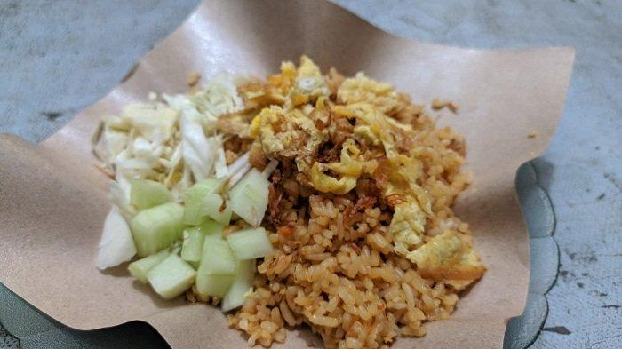

Street Fried Rice

Description
Indonesian street fried rice, known as "nasi goreng," is a vibrant and flavorful dish that showcases the country's rich culinary heritage. This popular street food typically combines day-old rice stir-fried with a savory blend of spices, including garlic, shallots, chili, and kecap manis (sweet soy sauce), creating a balance of sweet, salty, and spicy notes. Often cooked in small roadside stalls or food carts, it is commonly garnished with a fried egg on top, crispy prawn crackers, and fresh cucumber or tomato slices, offering a satisfying and hearty meal that reflects Indonesia's diverse flavors and resourceful cooking style.
Ingredients (Serves 2-3)
- 3 cups of cooked rice (preferably day-old or cold rice)
- 2 tablespoons vegetable oil
- 2 cloves garlic, minced
- 4 shallots, thinly sliced
- 2 red chilies (or chili paste), adjust to taste
- 1 teaspoon shrimp paste (optional, but traditional)
- 2 tablespoons kecap manis (sweet soy sauce)
- 1 tablespoon light soy sauce
- 1/2 teaspoon ground white pepper (or black pepper)
- 2 eggs, lightly beaten
- 1 cup mixed vegetables (e.g., carrots, peas, green beans), chopped
- 1/2 cup protein of choice (chicken, shrimp, beef, or tofu), diced or shredded
- Fried shallots (for garnish)
- Sliced cucumber and tomato (for serving)
- Prawn crackers (optional, for serving)